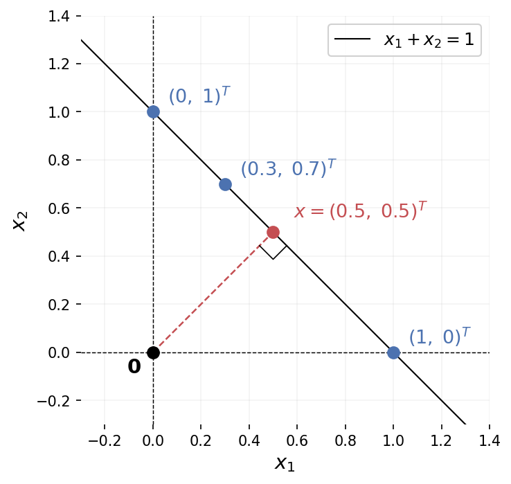

Part 3 of 4 · Primal Attention Series
Introduction
In Part 1, we started with what a matrix does to space, identified its four subspaces (column space, row space, and their orthogonal complements), and arrived at SVD as the solution to maximizing \(u^TAv\) under norm constraints. In Part 2, we shifted perspective. Instead of hard constraints, we let two forces compete in an LS-SVM objective: variance maximization against norm penalization. The parameter \(\gamma\) controls the shape of the LS-SVM loss landscape, and for specific quantized values where \(1/\gamma\) equals an eigenvalue, the objective at the stationary point is exactly zero.
Part 2 dealt with a single dataset and a single weight vector \(w\). The covariance matrix was square and symmetric. But SVD is about rectangular matrices, and rectangular matrices connect two different spaces. A \(2 \times 3\) matrix has row vectors in \(\mathbb{R}^3\) and column vectors in \(\mathbb{R}^2\). How do we bring the LS-SVM competing-forces framework to bear when there are two data sources that don’t even share the same dimension?
That’s the question Johan Suykens answered in 2016 with a short, dense paper: SVD Revisited: A New Variational Principle, Compatible Feature Maps and Nonlinear Extensions. Treat the matrix as two datasets (one from its rows, one from its columns), introduce a compatibility matrix \(C\) to reconcile their dimensions, and let the same LS-SVM machinery do the rest. The shifted eigenvalue problem falls out of the KKT conditions: the same block structure from Part 1, whose eigenvalues \(\pm\sigma_i\) recover the full SVD.
This paper appeared one year before Attention Is All You Need. That timing matters. The structure it shares with self-attention is striking: two data sources are passed through feature maps, their interactions form a kernel matrix, and the output vectors are linear combinations of Lagrange multipliers weighted by that matrix. Replace “Lagrange multipliers” with “values” and “kernel matrix” with “attention map,” and you’re looking at the same architecture. A later paper, Primal Attention, makes that connection explicit. Our goal across this series is to build the path there, one piece at a time. This post is the pivot.
In Parts 1 and 2, following Strang’s notation, we used \(m \times n\) for a matrix with \(m\) rows and \(n\) columns. Suykens’ paper reverses the convention: \(N\) rows and \(M\) columns. Throughout this post we adopt the same convention to stay consistent with the paper.
Rows and Columns as Two Datasets
In Part 1 we saw that a matrix \(A \in \mathbb{R}^{N \times M}\) organizes space into four fundamental subspaces: the row space and null space in \(\mathbb{R}^M\), the column space and left null space in \(\mathbb{R}^N\). SVD finds orthonormal bases for all four simultaneously. The right singular vectors \(v_i\) span the row space, the left singular vectors \(u_i\) span the column space, and the singular values \(\sigma_i\) measure how strongly each row-space direction couples to its column-space partner.
So SVD is, at its core, a story about the relationship between rows and columns. Two different spaces, linked through \(A\). The first move is to make that duality explicit: treat the rows and columns of \(A\) as two separate datasets.
For a matrix \(A \in \mathbb{R}^{N \times M}\), define two sets of data points:
\[x_i = A^T \varepsilon_i, \quad i = 1, \ldots, N\] \[z_j = A \varepsilon_j, \quad j = 1, \ldots, M\]
where \(\varepsilon_i\) and \(\varepsilon_j\) are standard basis vectors of \(\mathbb{R}^N\) and \(\mathbb{R}^M\) respectively. So \(A^T\varepsilon_i\) simply extracts the \(i\)-th row of \(A\) as a column vector, and \(A\varepsilon_j\) extracts the \(j\)-th column.
The \(\varepsilon\) notation is just a compact way to say: read off the rows and columns of A.
Returning to our \(2 \times 3\) toy matrix:
\[A = \begin{bmatrix} 1 & 2 & 0 \\ 0 & 1 & 2 \end{bmatrix}\]
Here \(N = 2\) and \(M = 3\). The standard basis vectors \(\varepsilon_1, \varepsilon_2 \in \mathbb{R}^2\):
\[\varepsilon_1 = \begin{bmatrix}1\\0\end{bmatrix}, \quad \varepsilon_2 = \begin{bmatrix}0\\1\end{bmatrix}\]
and \(\varepsilon_1, \varepsilon_2, \varepsilon_3 \in \mathbb{R}^3\):
\[\varepsilon_1 = \begin{bmatrix}1\\0\\0\end{bmatrix}, \quad \varepsilon_2 = \begin{bmatrix}0\\1\\0\end{bmatrix}, \quad \varepsilon_3 = \begin{bmatrix}0\\0\\1\end{bmatrix}\]
give:
\[x_1 = A^T\varepsilon_1 = \begin{bmatrix}1\\2\\0\end{bmatrix}, \quad x_2 = A^T\varepsilon_2 = \begin{bmatrix}0\\1\\2\end{bmatrix}\]
\[z_1 = A\varepsilon_1 = \begin{bmatrix}1\\0\end{bmatrix}, \quad z_2 = A\varepsilon_2 = \begin{bmatrix}2\\1\end{bmatrix}, \quad z_3 = A\varepsilon_3 = \begin{bmatrix}0\\2\end{bmatrix}\]
The \(x_i\) are the rows of \(A\), living in \(\mathbb{R}^3\). The \(z_j\) are the columns, living in \(\mathbb{R}^2\). Two point clouds in two different spaces.
Coupling Row and Column Directions
In Part 2, the LS-SVM formulation of PCA balanced two competing forces:
\[\min_{w, e} -w^Tw + \tfrac{1}{2}\gamma\sum_{i=1}^{N} e_i^2 \quad \text{subject to} \quad e_i = w^Tx_i\]
The first term penalizes the norm of \(w\), preventing the trivial solution of expanding \(w\) indefinitely to maximize variance. The second measures the projections of data points onto \(w\). Neither term can be read in isolation; \(\gamma\) controls the equilibrium between them.
Now we have two datasets: rows \(x_i \in \mathbb{R}^M\) and columns \(z_j \in \mathbb{R}^N\). Each gets its own weight vector and its own projection errors. The self-coupling \(-w^Tw\) becomes a cross-coupling \(-w^Tv\) between the two principal directions:
\[\min_{w,v,e,r} J(w, v, e, r) = -w^Tv + \tfrac{1}{2}\gamma\sum_{i=1}^{N} e_i^2 + \tfrac{1}{2}\gamma\sum_{j=1}^{M} r_j^2\]
subject to \(\quad e_i = w^Tx_i, \quad r_j = v^Tz_j\)
But there’s an immediate problem. The \(x_i\) live in \(\mathbb{R}^M\), so \(w\) must be in \(\mathbb{R}^M\) to compute \(w^Tx_i\). The \(z_j\) live in \(\mathbb{R}^N\), so \(v\) must be in \(\mathbb{R}^N\). For our toy matrix, that’s \(w \in \mathbb{R}^3\) and \(v \in \mathbb{R}^2\). The coupling term \(w^Tv\) is not even defined.
Compatible Feature Maps
We need a way to bring \(w\) and \(v\) into the same space. Introduce a matrix \(C \in \mathbb{R}^{M \times N}\) and define feature maps
\[\varphi(x_i) = C^Tx_i \in \mathbb{R}^N, \qquad \psi(z_j) = z_j \in \mathbb{R}^N\]
The map \(\varphi\) projects the row data from \(\mathbb{R}^M\) down to \(\mathbb{R}^N\), while \(\psi\) is simply the identity map: the column data stays untouched in \(\mathbb{R}^N\). Now both feature maps land in \(\mathbb{R}^N\), both weight vectors \(w, v\) live in \(\mathbb{R}^N\), and the coupling term \(w^Tv\) makes sense. The constraints become:
\[e_i = w^T\varphi(x_i) = w^TC^Tx_i, \qquad r_j = v^T\psi(z_j) = v^Tz_j\]
For our toy matrix: \(C\) is \(3 \times 2\), mapping the row vectors from \(\mathbb{R}^3\) to \(\mathbb{R}^2\). Both \(w\) and \(v\) are now in \(\mathbb{R}^2\).
But what should \(C\) be? We can’t just pick any matrix. The KKT conditions will tell us.
The Shifted Eigenvalue Problem
The Lagrangian and KKT conditions follow the same pattern as Parts 1 and 2. Setting all partial derivatives to zero and eliminating \(w\), \(v\), \(e\), \(r\) (details in the callout below), we arrive at:
\[\left[\varphi(x_i)^T\psi(z_j)\right][\beta] = [\alpha]\tilde{\Lambda}\] \[\left[\psi(z_j)^T\varphi(x_i)\right][\alpha] = [\beta]\tilde{\Lambda}\]
where \([\alpha]\) and \([\beta]\) collect the Lagrange multiplier vectors as columns, and \(\tilde{\Lambda} = \text{diag}(\lambda_1, \ldots, \lambda_r)\) with \(\lambda_l = 1/\gamma_l\).
The matrix \(\left[\varphi(x_i)^T\psi(z_j)\right]\) is \(N \times M\), rectangular and unsymmetric: it measures inner products between two different feature maps applied to two different datasets. For our \(2 \times 3\) matrix, this is a \(2 \times 3\) kernel matrix: 2 row vectors matched against 3 column vectors, each pair compared through their feature maps.
As in Part 2, the KKT conditions admit one stationary point per eigenvalue. The index \(l = 1, \ldots, r\) runs over these solutions, and each \(\lambda_l\) is the inverse of one of the “quantized” equilibrium values of \(\gamma\). If the algebra above looks cryptic, the callout below works through every step.
The Lagrangian is:
\[\mathscr{L} = -w^Tv + \tfrac{1}{2}\gamma\sum_i e_i^2 + \tfrac{1}{2}\gamma\sum_j r_j^2 - \sum_i \alpha_i(e_i - w^T\varphi(x_i)) - \sum_j \beta_j(r_j - v^T\psi(z_j))\]
Setting partial derivatives to zero:
\[\frac{\partial\mathscr{L}}{\partial w} = 0 \Rightarrow v = \sum_i \alpha_i\varphi(x_i) \quad \text{(1)}\]
\[\frac{\partial\mathscr{L}}{\partial v} = 0 \Rightarrow w = \sum_j \beta_j\psi(z_j) \quad \text{(2)}\]
\[\frac{\partial\mathscr{L}}{\partial e_i} = 0 \Rightarrow \alpha_i = \gamma e_i \quad \text{(3)}\]
For instance, \(\frac{\partial \mathscr{L}}{\partial e_1} = \gamma e_1 - \alpha_1 = 0\), because every other \(e_i^2\) and \(\alpha_i e_i\) term vanishes when differentiating with respect to \(e_1\). The same holds for each index independently.
\[\frac{\partial\mathscr{L}}{\partial r_j} = 0 \Rightarrow \beta_j = \gamma r_j \quad \text{(4)}\]
\[\frac{\partial\mathscr{L}}{\partial \alpha_i} = 0 \Rightarrow e_i = w^T\varphi(x_i) \quad \text{(5)}\]
\[\frac{\partial\mathscr{L}}{\partial \beta_j} = 0 \Rightarrow r_j = v^T\psi(z_j) \quad \text{(6)}\]
To eliminate \(w\), \(v\), \(e\), \(r\), substitute the first four into the last two. For the \(e_i\) constraints: \(e_i = w^T\varphi(x_i)\) with \(w = \sum_j \beta_j\psi(z_j)\) and \(\alpha_i = \gamma e_i\) gives:
\[\lambda\alpha_i = \sum_j \beta_j\psi(z_j)^T\varphi(x_i)\]
For our toy matrix (\(N=2\), \(M=3\)), this is two equations:
\[\lambda\alpha_1 = \beta_1\psi(z_1)^T\varphi(x_1) + \beta_2\psi(z_2)^T\varphi(x_1) + \beta_3\psi(z_3)^T\varphi(x_1)\]
\[\lambda\alpha_2 = \beta_1\psi(z_1)^T\varphi(x_2) + \beta_2\psi(z_2)^T\varphi(x_2) + \beta_3\psi(z_3)^T\varphi(x_2)\]
To assemble this into a matrix equation, note that each equation sums \(\beta_j\) times the scalar \(\psi(z_j)^T\varphi(x_i)\). Since an inner product is a scalar, \(\psi(z_j)^T\varphi(x_i) = \varphi(x_i)^T\psi(z_j)\). We use the flipped form when assembling the matrix so the row index \(i\) appears first and the column index \(j\) second:
\[\lambda \begin{bmatrix} \alpha_1 \\ \alpha_2 \end{bmatrix} = \begin{bmatrix} \varphi(x_1)^T\psi(z_1) & \varphi(x_1)^T\psi(z_2) & \varphi(x_1)^T\psi(z_3) \\ \varphi(x_2)^T\psi(z_1) & \varphi(x_2)^T\psi(z_2) & \varphi(x_2)^T\psi(z_3) \end{bmatrix} \begin{bmatrix} \beta_1 \\ \beta_2 \\ \beta_3 \end{bmatrix}\]
or compactly: \(\left[\varphi(x_i)^T\psi(z_j)\right]\beta = \lambda\alpha\), a \(2 \times 3\) matrix (one row per \(x_i\), one column per \(z_j\)).
Similarly, the three equations for \(\beta_1, \beta_2, \beta_3\):
\[\lambda \begin{bmatrix} \beta_1 \\ \beta_2 \\ \beta_3 \end{bmatrix} = \begin{bmatrix} \psi(z_1)^T\varphi(x_1) & \psi(z_1)^T\varphi(x_2) \\ \psi(z_2)^T\varphi(x_1) & \psi(z_2)^T\varphi(x_2) \\ \psi(z_3)^T\varphi(x_1) & \psi(z_3)^T\varphi(x_2) \end{bmatrix} \begin{bmatrix} \alpha_1 \\ \alpha_2 \end{bmatrix}\]
or: \(\left[\psi(z_j)^T\varphi(x_i)\right]\alpha = \lambda\beta\), a \(3 \times 2\) matrix, the transpose of the first.
Each non-zero \(\lambda\) gives a pair \((\alpha, \beta)\). Stacking all \(r\) solutions as columns into matrices \([\alpha] \in \mathbb{R}^{2 \times r}\) and \([\beta] \in \mathbb{R}^{3 \times r}\), and the corresponding eigenvalues into \(\tilde{\Lambda} = \text{diag}(\lambda_1, \ldots, \lambda_r)\):
\[\left[\varphi(x_i)^T\psi(z_j)\right][\beta] = [\alpha]\tilde{\Lambda}\] \[\left[\psi(z_j)^T\varphi(x_i)\right][\alpha] = [\beta]\tilde{\Lambda}\]
Substituting the feature maps \(\varphi(x_i) = C^Tx_i = C^TA^T\varepsilon_i\) and \(\psi(z_j) = z_j = A\varepsilon_j\) into an entry:
\[\varphi(x_i)^T\psi(z_j) = (C^TA^T\varepsilon_i)^T(A\varepsilon_j) = \varepsilon_i^TACA\varepsilon_j\]
where the middle step uses \((ABC)^T = C^TB^TA^T\).
If \(ACA = A\), this is simply \(A_{ij}\), and the system becomes the shifted eigenvalue problem we derived in Part 1.
To see why, take our toy matrix with \(i=1\), \(j=2\). Right-multiplying by \(\varepsilon_j\) extracts column \(j\):
\[A\varepsilon_2 = \begin{bmatrix}1 & 2 & 0\\0 & 1 & 2\end{bmatrix}\begin{bmatrix}0\\1\\0\end{bmatrix} = \begin{bmatrix}2\\1\end{bmatrix}\]
Left-multiplying by \(\varepsilon_i^T\) extracts row \(i\) from the result:
\[\varepsilon_1^T\begin{bmatrix}2\\1\end{bmatrix} = \begin{bmatrix}1 & 0\end{bmatrix}\begin{bmatrix}2\\1\end{bmatrix} = 2\]
So \(\varepsilon_i^T M \varepsilon_j\) picks out entry \((i,j)\) of whatever matrix \(M\) sits in the middle.
The LS-SVM route arrives at the same place through a different mechanism: competing forces instead of constrained maximization.
\[A[\beta] = [\alpha]\tilde{\Lambda}\] \[A^T[\alpha] = [\beta]\tilde{\Lambda}\]
The compatibility condition \(ACA = A\) is exactly what makes the unsymmetric kernel matrix collapse to \(A\) itself. Flipping all signs (\(-J\) instead of \(J\)) yields the same result: the KKT conditions find stationary points, and \(\nabla\mathscr{L} = 0\) has the same solutions as \(-\nabla\mathscr{L} = 0\). The sign convention is arbitrary; the balance is not.
Finding the Compatibility Matrix
The condition \(ACA = A\) is not arbitrary. It’s the defining property of a generalized inverse: a matrix \(C\) such that \(A\) “absorbs” \(C\) in the middle, returning to itself. For a full-rank matrix, the pseudoinverse \(A^\dagger\) provides exactly such a \(C\).
A matrix that isn’t square has no standard inverse. Consider a simple example: \(A = \begin{bmatrix}1 & 1\end{bmatrix}\), mapping \(\mathbb{R}^2 \to \mathbb{R}^1\). Given \(b = 1\), the equation \(Ax = b\) becomes \(x_1 + x_2 = 1\). That’s a line in \(\mathbb{R}^2\): infinitely many solutions. The points \((1, 0)\), \((0, 1)\), \((0.3, 0.7)\) all work. Information was lost in the projection from 2D to 1D, and there’s no unique way to recover it.
The pseudoinverse resolves this by picking, among all solutions, the one with smallest norm: the point on the line closest to the origin. Here that’s \((0.5, 0.5)\), with \(\|(0.5, 0.5)\| = 1/\sqrt{2}\), shorter than any other solution.

The algebraic derivation for the \(N < M\) case (more columns than rows) follows from one observation. \(A\) is not square, but \(AA^T\) is: it’s \(N \times N\), and invertible when \(A\) has full row rank. So:
\[AA^T(AA^T)^{-1} = I_N\]
Define \(A^\dagger = A^T(AA^T)^{-1}\). Then:
\[AA^\dagger = A \cdot A^T(AA^T)^{-1} = (AA^T)(AA^T)^{-1} = I_N \checkmark\]
This is a right inverse: \(AA^\dagger = I_N\), but \(A^\dagger A \neq I_M\) in general. It maps each \(b\) back to the minimum-norm solution. For our example: \(A^\dagger = \begin{bmatrix}1\\1\end{bmatrix} \cdot (2)^{-1} = \begin{bmatrix}0.5\\0.5\end{bmatrix}\), and indeed \(A^\dagger \cdot 1 = (0.5, 0.5)^T\).
The three cases for a full-rank matrix:
- \(N > M\): \(A^\dagger = (A^TA)^{-1}A^T\) (left inverse, \(A^\dagger A = I_M\))
- \(N < M\): \(A^\dagger = A^T(AA^T)^{-1}\) (right inverse, \(AA^\dagger = I_N\))
- \(N = M\): \(A^\dagger = A^{-1}\)
What Did We Just Build?
We started with a rectangular matrix \(A\) and a question: can the LS-SVM competing-forces framework from Part 2 handle SVD, where two spaces of different dimension are in play?
The path: split \(A\) into its rows and columns (two datasets), introduce a compatibility matrix \(C\) to bring them into the same space, and let the same Lagrangian machinery do the rest. The compatibility condition \(ACA = A\) (satisfied by the pseudoinverse) is what makes the cross-kernel matrix collapse to \(A\) itself, recovering Lanczos’ shifted eigenvalue problem.
Two different routes, same destination. The classical formulation from Part 1 maximizes \(u^TAv\) under norm constraints. The LS-SVM formulation balances coupling against projected variance. Both land on the same block eigenvalue structure, the same singular values, the same four subspaces.
Why Bother? Three Payoffs
Reformulating SVD through the LS-SVM lens took real work: two datasets, a compatibility matrix, KKT conditions. The classical variational formulation from Part 1 got us to the same eigenvalue problem more directly. So what did we gain?
1. The dual representation. The KKT conditions give us two ways to compute the output. The primal: \(e_i = w^T\varphi(x_i)\). The dual:
\[e_i = \sum_j \beta_j \, \psi(z_j)^T\varphi(x_i)\]
A weighted sum over data points, weighted by cross-kernel entries. The classical formulation from Part 1 has no analog of this. As we’ll see at the end of this post, this dual form has a familiar shape.
2. Nonlinear extensions. Replace the linear inner product \(\varphi(x_i)^T\psi(z_j)\) with a nonlinear kernel \(K(\varphi(x_i), \psi(z_j))\), and you get a nonlinear SVD. The classical formulation offers no route to this.
3. Perfect balance at the solution. At the KKT solutions, the objective \(J\) evaluates to exactly zero (Corollary 1 of the paper). The coupling term and the variance terms cancel perfectly. This is the same phenomenon we observed geometrically in Part 2 for PCA: at the quantized \(\gamma\) values, the landscape passes through zero.
Starting from the objective:
\[J = -w^Tv + \frac{\gamma}{2}\sum_i e_i^2 + \frac{\gamma}{2}\sum_j r_j^2\]
Substitute the KKT conditions. Replace \(w = \sum_j \beta_j\psi(z_j)\) and \(v = \sum_i \alpha_i\varphi(x_i)\):
\[w^Tv = \sum_i\sum_j \alpha_i\beta_j \underbrace{\varphi(x_i)^T\psi(z_j)}_{= A_{ij}} = \alpha^T A \beta\]
The shifted eigenvalue problem gives \(A\beta = \lambda\alpha\), so:
\[\alpha^T A\beta = \lambda\,\alpha^T\alpha\]
Replace \(e_i\) and \(r_j\). From \(\alpha_i = \gamma e_i\), we get \(e_i = \alpha_i/\gamma = \lambda\alpha_i\):
\[\frac{\gamma}{2}\sum_i e_i^2 = \frac{1}{2\gamma}\alpha^T\alpha = \frac{\lambda}{2}\alpha^T\alpha\]
Similarly:
\[\frac{\gamma}{2}\sum_j r_j^2 = \frac{\lambda}{2}\beta^T\beta\]
Combine. Substituting:
\[J = -\lambda\,\alpha^T\alpha + \frac{\lambda}{2}\alpha^T\alpha + \frac{\lambda}{2}\beta^T\beta\]
Since \(\alpha^T\alpha = \beta^T\beta\) (proved by multiplying \(A\beta = \lambda\alpha\) on the left by \(\alpha^T\) and \(A^T\alpha = \lambda\beta\) on the left by \(\beta^T\), both giving \(\alpha^TA\beta\), then dividing by \(\lambda \neq 0\)):
\[J = -\lambda\,\beta^T\beta + \frac{\lambda}{2}\beta^T\beta + \frac{\lambda}{2}\beta^T\beta = 0 \quad\square\]
The implication runs one way: KKT stationarity implies \(J = 0\), not the reverse. The KKT system is a coupled set of equations that locks \(w\), \(v\), \(\alpha\), \(\beta\), and \(\gamma\) together through the constraints. That structure reduces the degrees of freedom to a discrete set of solutions indexed by the singular values.
The condition \(J = 0\) alone is just one scalar equation in many unknowns. It says the coupling term \(w^Tv\) equals the total projected variance \(\frac{\gamma}{2}(\|e\|^2 + \|r\|^2)\), nothing more. Infinitely many \((w, v, \gamma)\) triples satisfy this balance without being anywhere near the SVD.
A natural temptation: minimize \(J^2\) by gradient descent over \(w\), \(v\), \(\gamma\), hoping to land on an SVD solution. The intuition is reasonable: in Part 2, the stationary points sat at semi-definite cases (positive or negative), and squaring would make all of them, including any saddle points, point upward into something gradient descent can chase. But \(J^2 = 0\) is one scalar equation in many unknowns. The zero-level set is vast, with no eigenvalue structure, no orthogonality, no singular vectors. The constraints and coupling that the KKT system encodes are absent.
The “Primal Attention” paper does use \(J^2\), but not alone: it appears as a regularization term added to a task loss, within a different objective and structure.
The Seed of Attention
Look at the dual representation from Remark 2 one more time:
\[e_i = \sum_j \beta_j \, \psi(z_j)^T\varphi(x_i)\]
Two different feature maps (\(\varphi\) and \(\psi\)), applied to two different data sources (\(x_i\) and \(z_j\)). Their inner product forms an unsymmetric cross-kernel. The output is a linear combination of Lagrange multipliers, weighted by that kernel.
Now recall self-attention:
\[\text{out}_i = \sum_j V_j \cdot Q_i^T K_j\]
The structure is the same. Queries and keys are two different projections of the input — two different feature maps. Their inner product forms an unsymmetric score matrix. The output is a linear combination of values, weighted by those scores.
| LS-SVM SVD (2016) | Self-attention (2017) |
|---|---|
| \(\varphi(x_i)\) | \(Q_i\) (queries) |
| \(\psi(z_j)\) | \(K_j\) (keys) |
| \(\beta_j\) | \(V_j\) (values) |
| \(\psi(z_j)^T\varphi(x_i)\) | \(Q_i^TK_j\) (attention score) |
This parallel is not a coincidence. A later paper, Primal Attention (2023), makes the connection explicit. The LS-SVM formulation produces two sets of outputs (\(e_i\) and \(r_j\), one per dataset); the next post will show how these are reconciled into a single attention output.
The SVD Revisited paper appeared in 2016, one year before Attention Is All You Need. The mathematical structure that underpins self-attention was already there, in a short linear algebra paper about compatible feature maps.
Conclusion
Suykens reformulated PCA, canonical correlation analysis, partial least squares, density estimation, and clustering through the LS-SVM lens as early as 2002, in Least Squares Support Vector Machines. SVD arrived much later, in this 2016 paper, requiring the additional machinery of compatible feature maps and the compatibility condition to handle rectangular matrices.
One year later, Vaswani et al. published Attention Is All You Need. The structural parallel between the LS-SVM dual and self-attention went unnoticed for several years, until Suykens and collaborators (Yingyi Chen, Qinghua Tao, Francesco Tonin) recognized it. The result: Primal Attention (2023), which recasts self-attention as the dual of an LS-SVM kernel SVD problem and rewrites it in primal form, bypassing the costly \(N \times N\) attention map while achieving competitive performance.
The next post covers that paper. We now have all the pieces: the variational formulation, the competing forces, the primal-dual duality, and the cross-kernel structure that quietly foreshadowed attention.